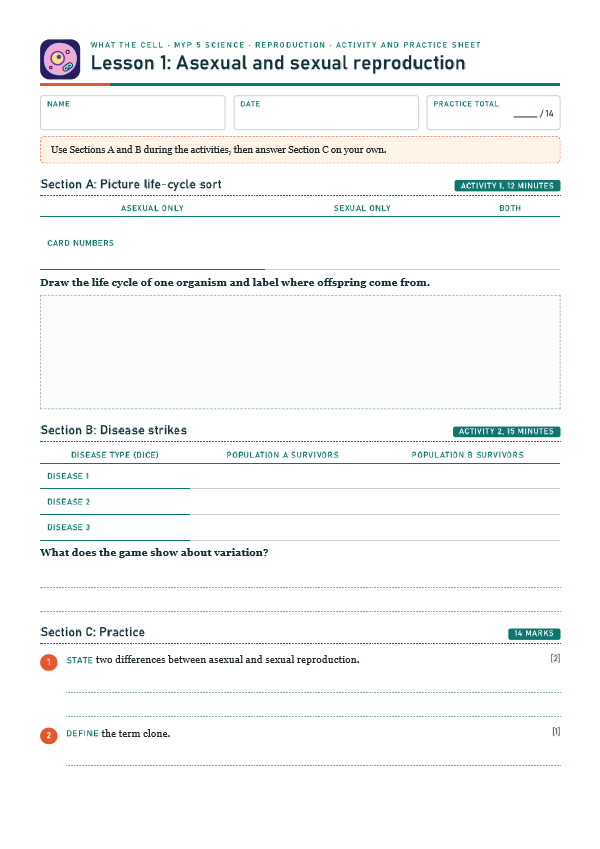

By the end of the lesson you can
- Describe asexual and sexual reproduction
- Compare the offspring each one produces
- State the chromosome numbers of human body cells and gametes
- Explain why variation helps a species survive
Keys: arrows or a presentation clicker move the slides, F for full screen. Slides with a red dot have a video or simulation.
Videos (all 5 minutes or less)
- 3:18
Sexual and asexual reproduction
Cognito. While you watch: What is a gamete? Slide 10.
- 3:44
What is asexual reproduction?
FuseSchool. While you watch: Name three types of asexual reproduction. Slide 20.
Simulations
- Lab
- PhET
PhET Natural Selection
PhET, University of Colorado Boulder. Try the tasks on the simulation slide.
Print and practise

Activity and practice sheet
Used in the lesson’s activities, with practice questions. Your teacher has the answers.
Download (PDF)Lesson 1 slides
All 26 slides in one file, to read again or print. The video buttons on the slides open YouTube.
Download the slides (PDF)Revising? The Revision tab on the unit page has the unit notes and review.
Notes: Asexual and sexual reproduction
reproduction
Making new individuals (offspring) of the same species. For example: a cat having kittens; a mango seed growing into a tree.
DNA
The chemical that carries the instructions to build and run an organism. For example: DNA decides your blood group.
chromosome
A long, tightly coiled thread of DNA inside the nucleus. For example: humans have 46 in each body cell.
gene
A short section of DNA that controls one feature. For example: a gene for eye colour.
asexual reproduction
One parent makes offspring on its own, with no sex cells. The parent's cells divide by mitosis, so the DNA is copied exactly.. For example: a potato growing new plants.
clone
An organism with exactly the same DNA as its parent (or as another clone). For example: every plant grown from one potato is a clone of it.
gamete
A sex cell. Males make sperm; females make eggs (ova). Plants make pollen and ovules.. For example: a sperm cell.
fertilisation
A male gamete and a female gamete join and their nuclei fuse. For example: a sperm entering an egg.
zygote
The single new cell made at fertilisation; it grows into the new organism. For example: the first cell of every baby.
diploid
A cell with two sets of chromosomes, one set from each parent. Human body cells: 46.. For example: a skin cell.
haploid
A cell with one set of chromosomes. Human gametes: 23.. For example: a sperm or an egg.
variation
Differences between individuals of the same species. For example: brothers and sisters with different heights or hair.
Key words
| reproduction | making new individuals of the same species |
|---|---|
| asexual reproduction | one parent, no gametes; offspring are clones |
| sexual reproduction | two parents; gametes join; offspring vary |
| gamete | a sex cell, such as a sperm or an egg; haploid |
| fertilisation | a male and a female gamete joining to make a zygote |
| clone | a genetically identical copy |
| diploid / haploid | two sets of chromosomes (46 in humans) / one set (23) |
| variation | differences between individuals of the same species |